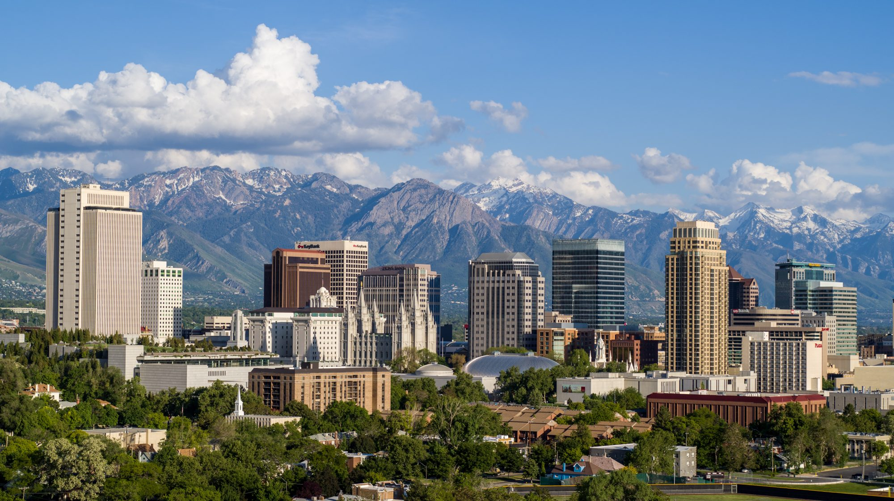

Started just a couple of weeks ago Coleman's pizza set out with the goal of having the best authentic Italian pizza in all of the Salt Lake valley. All of our ingredients are fresh, organic, and homegrown. Here at Coleman's Pizza, we like to give back to the community that keeps us going. By working with local farmers we are able to deliver the best and the freshest pizza money can buy. We’re located just outside of SLC here in Sandy. So come on and stop by, we'd love to have you! 